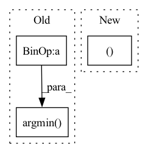

Pattern ID :4850

Before Change
centroid_ids = self._init_kmeans_random(data, K=K) // (batch_size, K)
centroid_ids = centroid_ids.view(batch_size * K) // (batch_size * K)
flatten_data = data.reshape(batch_size * num_samples, num_features) // (batch_size * num_samples, num_features)
flatten_centroids = flatten_data[centroid_ids]
centroids = flatten_centroids.view(batch_size, K, num_features) // (batch_size, K, num_features)
distance = self.compute_distance(data.unsqueeze(dim=2), centroids.unsqueeze(dim=1), dim=3) // (batch_size, num_samples, K)
cluster_ids = torch.argmin(distance, dim=2) // (batch_size, num_samples)
self.cluster_ids = cluster_ids // (batch_size, num_samples)
self.num_samples = num_samples
After Change
self.K = K
self.init_centroids = init_centroids
self.cluster_ids, self.centroids = None, None
def forward(self, data):
In pattern: SUPERPATTERN
Frequency: 3
Non-data size: 3
Instances
Fragment ID: 17062849
Project Name: tky823/dnn-based_source_separation
Commit Name: b6c131b4b23e7d8c43ca45600204a444687d78da
Time: 2021-11-20
Author: delta9guitar97@gmail.com
File Name: src/algorithm/clustering.py
M Class Name: KMeansBase
N Class Name: KMeansBase
M Method Name: __init__(3)
N Method Name: __init__(4)
M Parent Class: nn.Module
N Parent Class: nn.Module
M File Name: src/algorithm/clustering.py
N File Name: src/algorithm/clustering.py
M Start Line: 7
M End Line: 33
N Start Line: 11
N End Line: 13
'>
Before Change
z_flattened = z.view(-1, self.codebook_dim)
// distances from z to embeddings e_j (z - e)^2 = z^2 + e^2 - 2 e * z
d = torch.sum(z_flattened.pow(2), dim=1, keepdim=True) + \
torch.sum(self.embedding.weight.pow(2), dim=1) - 2 * \
torch.einsum("bd,dn->bn", z_flattened, self.embedding.weight.permute(1,0)) // "n d -> d n"
encoding_indices = torch.argmin(d, dim=1)
z_q = self.embedding(encoding_indices).view(z.shape)
encodings = F.one_hot(encoding_indices, self.num_tokens).type(z.dtype)
avg_probs = torch.mean(encodings, dim=0)
perplexity = torch.exp(-torch.sum(avg_probs * torch.log(avg_probs + 1e-10)))
After Change
- 2 * z_flattened @ self.embedding.weight
+ self.embedding.weight.pow(2).sum(0, keepdim=True)
)
_, encoding_indices = (-d).max(1)
encodings = F.one_hot(encoding_indices, self.num_tokens).type(z_flattened.dtype)
encoding_indices = encoding_indices.view(*z.shape[:-1])
z_q = self.embedding(encoding_indices)
'>
Fragment ID: 17062846
Project Name: tgisaturday/dalle-lightning
Commit Name: e387b61c8c640b56c7cbd241d8ec60ab1f022611
Time: 2021-08-12
Author: jamesk1228@gmail.com
File Name: pl_dalle/modules/vqvae/quantize.py
M Class Name: EMAVectorQuantizer
N Class Name: EMAVectorQuantizer
M Method Name: forward(2)
N Method Name: forward(2)
M Parent Class: nn.Module
N Parent Class: nn.Module
M File Name: pl_dalle/modules/vqvae/quantize.py
N File Name: pl_dalle/modules/vqvae/quantize.py
M Start Line: 85
M End Line: 118
N Start Line: 184
N End Line: 215
'>
Before Change
// distances from z to embeddings e_j (z - e)^2 = z^2 + e^2 - 2 e * z
d = torch.sum(z_flattened.pow(2), dim=1, keepdim=True) + \
torch.sum(self.embed.pow(2), dim=1) - 2 * \
torch.einsum("bd,dn->bn", z_flattened, self.embed.permute(1,0)) // "n d -> d n"
encoding_indices = torch.argmin(d, dim=1)
z_q = self.embedding(encoding_indices).view(z.shape)
encodings = F.one_hot(encoding_indices, self.num_tokens).type(z.dtype)
avg_probs = torch.mean(encodings, dim=0)
perplexity = torch.exp(-torch.sum(avg_probs * torch.log(avg_probs + 1e-10)))
After Change
- 2 * z_flattened @ self.embedding.weight
+ self.embedding.weight.pow(2).sum(0, keepdim=True)
)
_, encoding_indices = (-d).max(1)
encodings = F.one_hot(encoding_indices, self.num_tokens).type(z_flattened.dtype)
encoding_indices = encoding_indices.view(*z.shape[:-1])
z_q = self.embedding(encoding_indices)
'>
Fragment ID: 17062847
Project Name: tgisaturday/dalle-lightning
Commit Name: 7a07ecfb269329aa84b6227289bec593ef24bfde
Time: 2021-07-28
Author: jamesk1228@gmail.com
File Name: pl_dalle/modules/vqvae/quantize.py
M Class Name: EMAVectorQuantizer
N Class Name: EMAVectorQuantizer
M Method Name: forward(2)
N Method Name: forward(2)
M Parent Class: nn.Module
N Parent Class: nn.Module
M File Name: pl_dalle/modules/vqvae/quantize.py
N File Name: pl_dalle/modules/vqvae/quantize.py
M Start Line: 118
M End Line: 151
N Start Line: 67
N End Line: 96